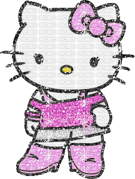
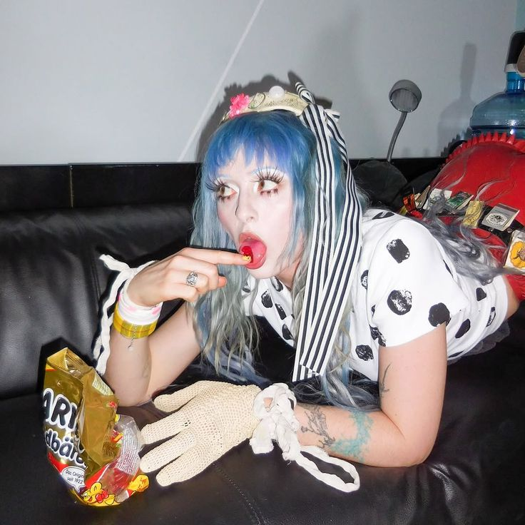
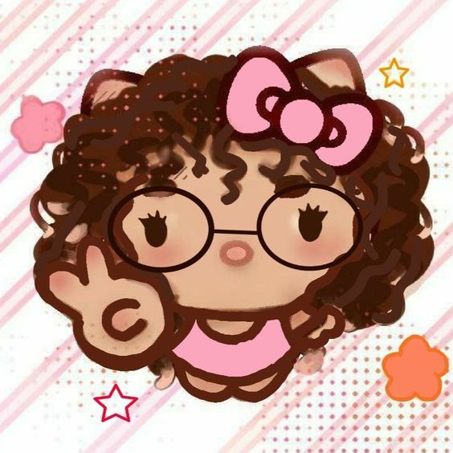
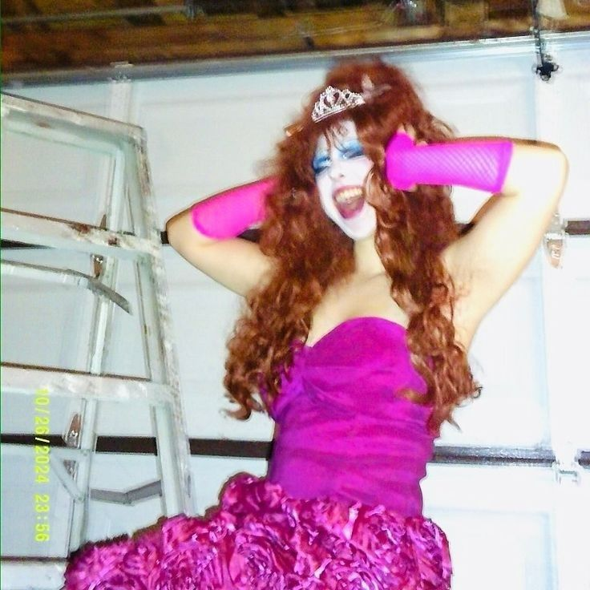
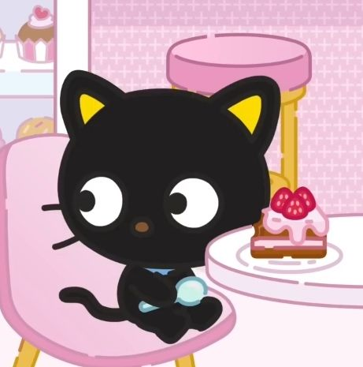
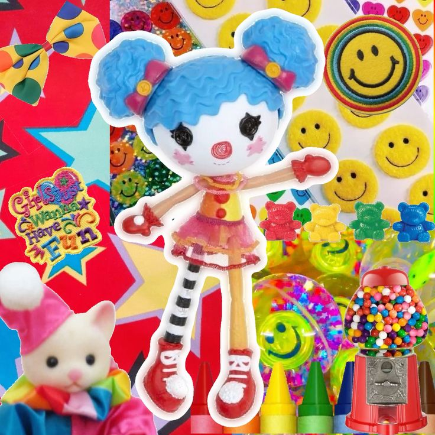

— "You think everything and everyone is beautiful"
— "Maybe that's the real punk rock"
Bienvenidx a mi primera página web. Aquí hablaré un poco sobre mí, qué me gusta hacer, cuáles son mis cosas favoritas, etc. Aquí está mi Instagram en caso de querer aprender más sobre mi persona. Ponte cómodx y ojalá te diviertas un rato :)





| Categoría | Creativos | "Intelectuales" |
|---|---|---|
| Personales | Dibujar, hacer manualidades, jugar videojuegos, leer (cómics y libros) y escuchar música |
Leer artículos académicos, ensayos y ver documentales |
| Profesionales | Diseño web, diseño de videojuegos, arte digital y animación 3D |
Visión y gráficas por computadora, geometría vectorial y temas de computación cuántica |